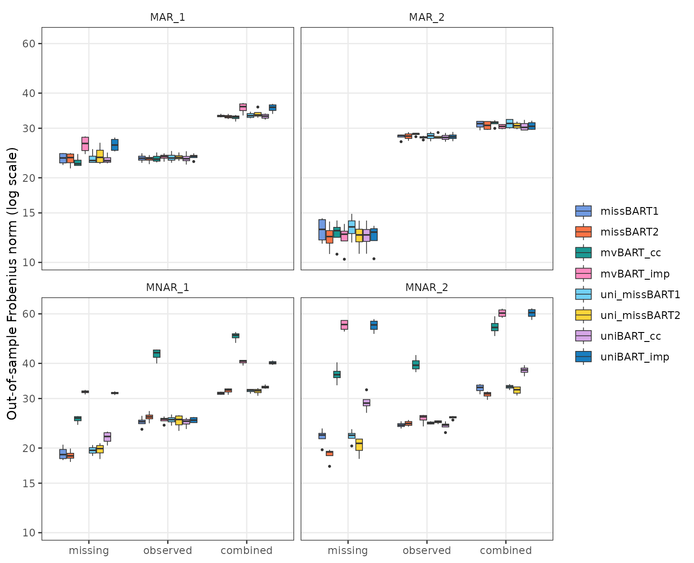
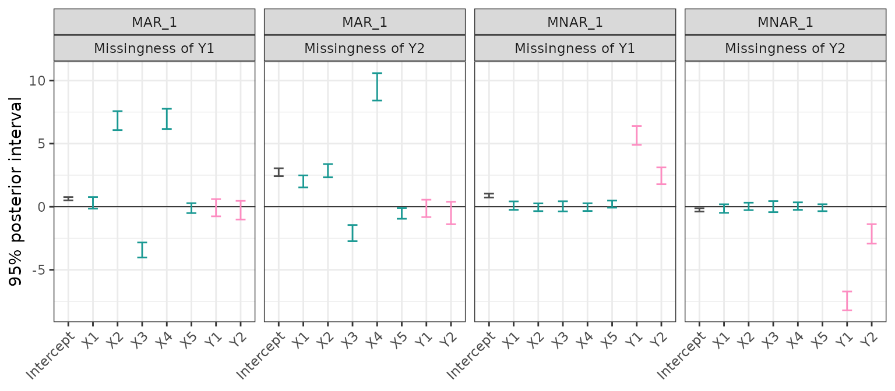
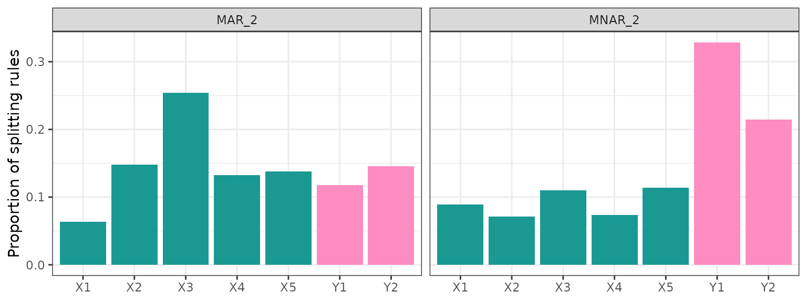
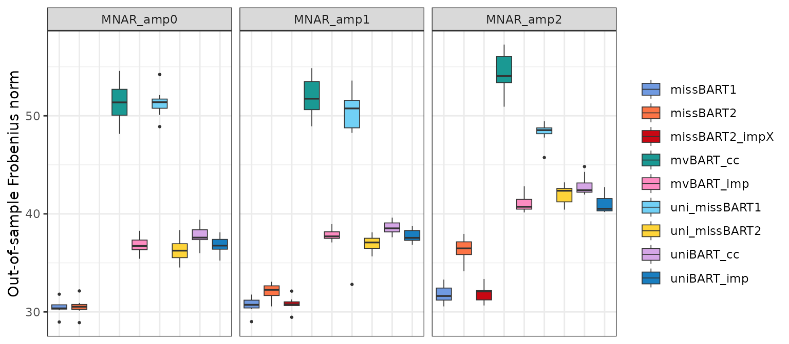

The samplers in missBART were rewritten in C++ for version 0.2.0, and a few steps were corrected along the way (see the changelog). This article re-runs the simulation studies of Goh, Soh, Parnell and Murphy (2024, arXiv:2412.14946) with the new code and compares the results with those reported in the paper.
What was run
The simulated data sets, the cross-validation folds and the
missForest imputations used in the paper are stored in the Examples/
folder of the repository, so the comparison uses exactly the same data
and folds. The settings follow the paper: 5,000 burn-in and 5,000 kept
iterations, 100 regression trees, and 20 (bivariate and univariate
examples) or 50 (five-response examples) missingness trees.
| Scenarios | Paper | Responses | Folds |
|---|---|---|---|
| MAR 1, MAR 2, MNAR 1, MNAR 2 | Section 6.1 | 2 | 4 |
| MNAR_amp0, MNAR_amp1, MNAR_amp2 | Section 6.2 | 5 | 8 |
| u-shape, n-shape | Appendix D | 1 | 4 |
Each model is fitted to the training folds and predicts the held-out fold. As in the paper, accuracy is the Frobenius norm of the difference between the predictions and the true simulated responses in the held-out fold, computed over the cells that were missing, the cells that were observed, and all cells.
The code is in Examples/rerun_paper_simulations.R.
This article only reads the predictions that script saved.
408 model fits were run (0 failed), taking 7.2 hours of computing time in total, or about 7 minutes on 60 cores.
Bivariate examples (Figure 1 of the paper)

The table compares the median over folds with the value read off Figure 1 of the paper. The paper only reports these results as box plots, so the paper values were read by eye and are accurate to about half a unit. A dash means the paper omitted the result because it was off the scale.
| scenario | cells | source | missBART1 | missBART2 | mvBART_cc | mvBART_imp | uni_missBART1 | uni_missBART2 | uniBART_cc | uniBART_imp |
|---|---|---|---|---|---|---|---|---|---|---|
| MAR_1 | missing | paper | 23.0 | 23.5 | 23.0 | 25.8 | 23.5 | 24.0 | 23.2 | 26.0 |
| 0.2.0 | 23.5 | 22.6 | 23.1 | 26.1 | 23.5 | 22.7 | 23.2 | 25.9 | ||
| MAR_1 | combined | paper | 32.4 | 32.9 | 32.7 | 35.2 | 33.2 | 33.7 | 33.2 | 35.2 |
| 0.2.0 | 32.9 | 32.5 | 32.9 | 35.4 | 33.3 | 32.9 | 33.2 | 35.4 | ||
| MAR_2 | missing | paper | 12.7 | 12.2 | 12.8 | 12.3 | 13.0 | 12.5 | 12.3 | 12.4 |
| 0.2.0 | 13.0 | 12.6 | 13.2 | 12.5 | 13.0 | 12.7 | 12.5 | 12.6 | ||
| MAR_2 | combined | paper | 30.9 | 30.2 | 31.5 | 30.4 | 30.9 | 30.5 | 30.2 | 30.4 |
| 0.2.0 | 30.7 | 30.6 | 31.1 | 30.2 | 31.1 | 30.5 | 30.4 | 30.3 | ||
| MNAR_1 | missing | paper | 19.6 | 18.5 | 25.2 | 31.2 | 21.0 | 19.4 | 22.2 | 31.3 |
| 0.2.0 | 19.2 | 18.6 | 25.6 | 31.3 | 20.2 | 20.1 | 21.9 | 31.4 | ||
| MNAR_1 | combined | paper | 31.4 | 32.0 | – | 40.1 | 32.1 | 31.8 | 33.0 | 40.5 |
| 0.2.0 | 31.6 | 31.9 | 50.8 | 40.3 | 32.0 | 31.8 | 32.5 | 40.6 | ||
| MNAR_2 | missing | paper | 21.5 | 18.8 | 36.5 | – | 26.0 | 20.6 | 27.0 | – |
| 0.2.0 | 21.7 | 19.6 | 35.6 | 55.3 | 22.5 | 20.5 | 27.7 | 55.0 | ||
| MNAR_2 | combined | paper | 32.3 | 31.2 | – | – | 35.4 | 32.3 | 36.0 | – |
| 0.2.0 | 32.3 | 31.4 | 52.5 | 60.3 | 33.2 | 31.8 | 36.5 | 60.6 |
The new code reproduces the paper’s results, and with them its conclusions:
- Under MAR, all methods perform about the same, apart from the two that train on missForest imputations in MAR 1.
- Under MNAR, the joint models give much better predictions for the missing responses than the complete-case and imputation-based alternatives.
-
missBART2is the better of the two joint models when the missingness was generated from trees (MAR 2, MNAR 2).
The largest difference is uni_missBART1 in MNAR 2, which
does better here (22.5 against about 26 for the missing responses).
Recovering the missingness mechanism (Figures 2 and 3)
The probit coefficients of missBART1, from the first
fold. Each panel is the missingness of one response. As in Figure 2 of
the paper, the intervals for the coefficients of the responses
(Y1, Y2) cover zero when the data are MAR and
are far from zero when they are MNAR.

The numbers also agree closely with the paper. For example, in MAR 1
the coefficients of X2 and X4 for the first
response are about 7 in both, and in MNAR 1 the coefficients of
Y1 are about 5.6 and -7.5 in both.
The variable importance in the missingness trees of
missBART2, from the first fold. As in Figure 3 of the
paper, the covariates (X3 in particular) are used most
under MAR 2, and the two responses dominate under MNAR 2.

Five responses with missing covariates (Figure 4)

| scenario | cells | source | missBART1 | missBART2 | missBART2_impX | mvBART_cc | mvBART_imp | uni_missBART1 | uni_missBART2 | uniBART_cc | uniBART_imp |
|---|---|---|---|---|---|---|---|---|---|---|---|
| MNAR_amp0 | combined | paper | 30.5 | 30.5 | – | 52.0 | 37.0 | 49.0 | 36.5 | 38.0 | 37.0 |
| 0.2.0 | 30.5 | 30.6 | – | 51.6 | 36.8 | 51.4 | 36.2 | 37.5 | 36.8 | ||
| MNAR_amp1 | combined | paper | 31.0 | 31.8 | 30.8 | 52.0 | 38.0 | 48.0 | 37.0 | 38.5 | 37.8 |
| 0.2.0 | 30.6 | 31.9 | 30.8 | 51.9 | 37.8 | 50.9 | 37.1 | 38.4 | 37.4 | ||
| MNAR_amp2 | combined | paper | 33.5 | 36.5 | 31.5 | 54.5 | 41.0 | 43.0 | 42.0 | 42.5 | 41.0 |
| 0.2.0 | 31.9 | 36.4 | 32.0 | 54.1 | 40.7 | 47.9 | 41.6 | 42.4 | 40.5 |
Again the agreement is close: the joint multivariate models are
clearly best, and covariate imputation helps missBART2 when
many covariates are missing (MNAR_amp2). missBART1 does a
little better than in the paper in MNAR_amp2, and
uni_missBART1 a little worse.
Univariate examples (Appendix D)
Out-of-sample root mean squared error over all held-out observations, averaged over the four folds. For the u-shaped example, the results of the original R code were saved with the data, so they can be compared directly. For the n-shaped example the paper values were read off Figure D.3 (at ).
| model | u-shape, original code | u-shape, 0.2.0 | n-shape, paper | n-shape, 0.2.0 |
|---|---|---|---|---|
| missBART1 | 1.18 | 1.21 | 1.32 | 1.38 |
| missBART2 | 1.16 | 1.17 | 1.16 | 1.16 |
| uniBART_cc | 1.15 | 1.18 | 1.31 | 1.30 |
| uniBART_imp | 1.63 | 1.61 | – | 2.45 |
The conclusions are unchanged: all three sensible methods do equally
well for u-shaped missingness, and only missBART2 copes
with n-shaped missingness, which a probit regression cannot
represent.
The update of the missing responses
Version 0.2.0 changed how missBART1 updates missing
responses in rows that are only partly missing: by default it now
conditions on the observed responses in the same row
(ymis_update = "conditional"), where Appendix C.1 of the
paper uses the margin of the full-row distribution
(ymis_update = "marginal"). Both were run here.
| scenario | missing: conditional | missing: marginal | combined: conditional | combined: marginal |
|---|---|---|---|---|
| MAR_1 | 23.5 | 23.1 | 32.9 | 32.9 |
| MAR_2 | 13.0 | 13.0 | 30.7 | 30.5 |
| MNAR_1 | 19.2 | 19.2 | 31.6 | 31.5 |
| MNAR_2 | 21.7 | 26.1 | 32.3 | 36.0 |
| MNAR_amp0 | 21.6 | 21.7 | 30.5 | 30.5 |
| MNAR_amp1 | 22.0 | 22.0 | 30.6 | 30.6 |
| MNAR_amp2 | 24.0 | 23.8 | 31.9 | 31.9 |
On these data sets the two versions give almost the same predictions, except in MNAR 2 where the conditional update is clearly better. The difference matters more when the residual correlation between the responses is strong: in a separate experiment with three responses and residual correlations of 0.8, the conditional update reduced the error of the imputations by about a quarter and recovered the residual correlation much better (0.68 against 0.28).
Computing time
Median seconds per fit (10,000 iterations, 1,500 or 1,750 training
rows). The uni_ models fit one model per response, so their
times are the sum over responses.
| model | One response | Two responses | Five responses |
|---|---|---|---|
| missBART1 | 24 | 33 | 72 |
| missBART2 | 24 | 32 | 84 |
| missBART2_impX | – | – | 82 |
| mvBART_cc | – | 12 | 7 |
| mvBART_imp | – | 24 | 42 |
| uni_missBART1 | – | 50 | 144 |
| uni_missBART2 | – | 53 | 213 |
| uniBART_cc | 14 | 29 | 51 |
| uniBART_imp | 20 | 42 | 109 |
The fits ran 60 at a time on a shared machine, so these are slower
than a fit run on its own. With the original R code a single
missBART1 fit of this size takes hours.
Summary
The C++ samplers reproduce the simulation results of the paper to
within the accuracy with which they can be read from its figures, and
the conclusions of its simulation studies hold. The real data article looks at the application
in the paper, where the picture for missBART1 is less
clear-cut.